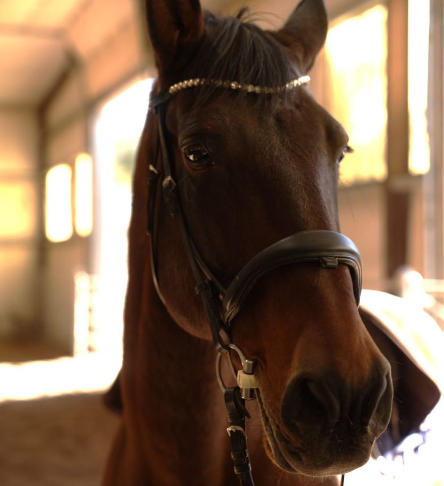
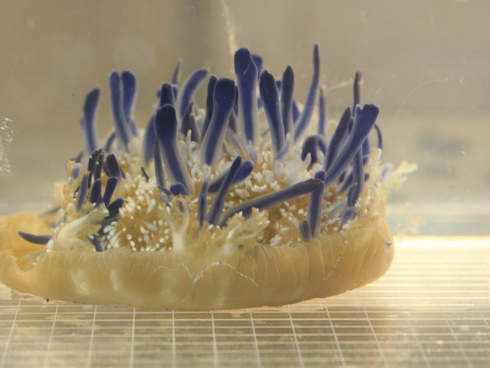
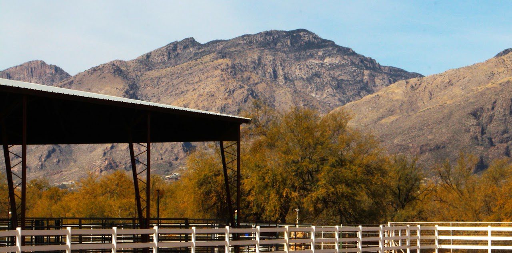

Laura Miller
Professor of Mathematics · Founder of EquiPhysics
I build mathematical models of how animals move. Half of our lab works on fluids: how jellyfish, corals, and the smallest insects swim, feed, fly, and pump. The other half works on horses: gait, breathing, and heart rate, and how they fit together.


Welcome!
Our group develops data-driven mathematical models of animal movement. We take measurements of real animals, build physical models and computer simulations, and use them to understand the forces animals feel and make.
Everyone who likes an interdisciplinary approach is welcome here. Our lab includes mathematicians who have not studied biology since high school and biologists who have not studied math since Calculus I. We've also had chemists, physicists, engineers, and artists work with us.

Systems biomechanics
How gait, breathing, and heart rate work together, and what movement data can tell us about soundness and fitness.
Read more
Swimming and feeding
How upside-down jellyfish pump water through their oral arms, and how pulsing corals stir the water around them.
Read more
Tiny flyers and filters
Bristled wings, leaky rakes, and the physics of flying when air feels thick.
Read more
Pumps of every size
From valveless embryonic heart tubes to the athletic heart and aorta of the horse.
Read more
Mathematics at work for horses
I have worked with horses since I was eight, mostly in classical dressage, horse care, and running barns. Now the horses are my partners in the science too. We record gait with wearable motion sensors and heart rate with straps made for horses, and we build models that explain what we see.
- EquiPhysics is the nonprofit I founded, now based at Rancho del Nido in Sonoita, Arizona. We bring horse lovers to mathematics, and put mathematics to work for horses.
- The program began at the University of Arizona's Al-Marah Equine Center (AMEC) and moved to Rancho del Nido in 2026. Read how it moved.
- Teachers can use our free apps and lessons, built from our own horses' data.


News
- Dominique Barbier clinic with EquiPhysics demos at Rancho del Nido in Sonoita. Come ride or audit! Details
- New free app: the Horse Heart Lab, with a classroom activity built on Duque's real ECG.
- EquiPhysics has arrived at Rancho del Nido in Sonoita, Arizona.
- We hosted Dynamics Days and a workshop on horse and human partnership and human-agent teaming at the University of Arizona.
- Bernadette Genua and I spoke on the systems biomechanics of the horse at the Global Symposium on Racing in Tucson.
- Congratulations to Dr. Dunia Fernandez on her PhD in Applied Mathematics!
- Our Data Driven Discovery and Equine Science REU students presented their posters at the Al-Marah Equine Center.
- Congratulations to Dr. Addie Harrison on her PhD in Applied Mathematics!